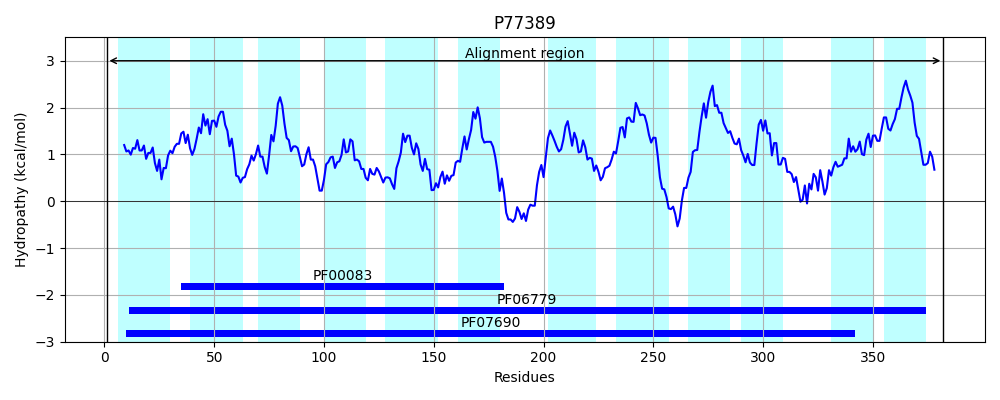
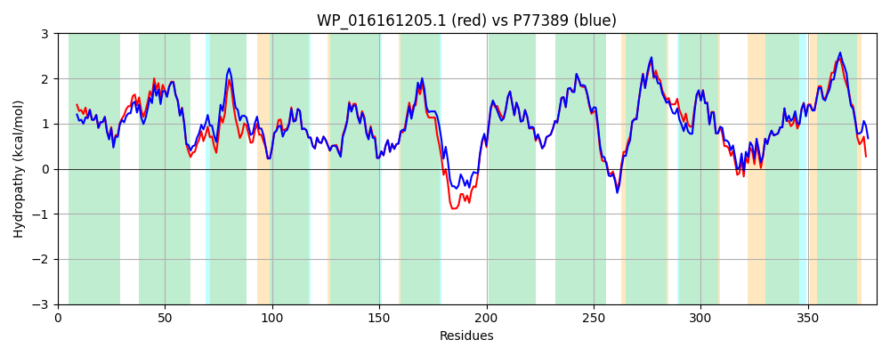

Hit Accession: P77389
Hit TCID: 2.A.1.2.65
Hit Description: gnl|BL_ORD_ID|11510 gnl|TC-DB|P77389|2.A.1.2.65 Inner membrane transport protein ydhP OS=Escherichia coli (strain K12) GN=ydhP PE=1 SV=1
Mach Len: 382
e:0.000000
Query TMS Count : 12
Hit TMS Count: 12
TMS-Overlap Score: 12.700000
Predicted Substrates:None
BLAST Alignment:
Score: 1696 , Bit scores: 657 bits, E-value: 0.0e+00, Alignment length: 382, Percentage identity: 88
Query: 1 MKINFPLLALAIGAFGIGTTEFSPMGLLPVIAKGVDVSIPVAGMLISAYAIGVMVGAPLMTLLLSHRARRNALIFLMGIFTVGNLLSSIAPDYTTLLLSRIITSLNHGAFFGLGSVVAASVVPKHKQASAVATMFMGLTIANIGGVPAATWLGETIGWRMSFLATAGLGLLAMVSLWFSLPKGSAGERPDVKKELSVLLRPQVLSALLTTVLGAGAMFTLYTYISPVLNTLTHASSLFITAMLVLIGVGFSLGNYLGGKFADRSVSGTLKGFLLLLMAIMLAIPLLAQSQAGAAISMIVWGAATFAVVPPLQMRVMRVAHEAPGLSSSVNIGAFNLGNALGAAAGGAVISGGLGYAFVPVMGAIIAGLALLLVWFSGRAQPE 382
MKIN+PLLALAIGAFGIGTTEFSPMGLLPVIA+GVDVSIP AGMLISAYA+GVMVGAPLMTLLLSHRARR+ALIFLM IFT+GN+LS+IAPDY TL+LSRI+TSLNHGAFFGLGSVVAASVVPKHKQASAVATMFMGLT+ANIGGVPAATWLGETIGWRMSFLATAGLG+++MVSL+FSLPKG AG RP+VKKEL+VL+RPQVLSALLTTVLGAGAMFTLYTYISPVL ++THA+ +F+TAMLVLIGVGFS+GNYLGGK ADRSV+GTLKGFLLLLM IMLAIP LA+++ GAAISM+VWGAATFAVVPPLQMRVMRVA EAPGLSSSVNIGAFNLGNALGAAAGGAVIS GLGY+FVPVMGAI+AGLALLLV+ S R QPE
Sbjct: 1 MKINYPLLALAIGAFGIGTTEFSPMGLLPVIARGVDVSIPAAGMLISAYAVGVMVGAPLMTLLLSHRARRSALIFLMAIFTLGNVLSAIAPDYMTLMLSRILTSLNHGAFFGLGSVVAASVVPKHKQASAVATMFMGLTLANIGGVPAATWLGETIGWRMSFLATAGLGVISMVSLFFSLPKGGAGARPEVKKELAVLMRPQVLSALLTTVLGAGAMFTLYTYISPVLQSITHATPVFVTAMLVLIGVGFSIGNYLGGKLADRSVNGTLKGFLLLLMVIMLAIPFLARNEFGAAISMVVWGAATFAVVPPLQMRVMRVASEAPGLSSSVNIGAFNLGNALGAAAGGAVISAGLGYSFVPVMGAIVAGLALLLVFMSARKQPE 382 | Protein Hydropathy Plots: |
|---|
 |  |
Pairwise Alignment-Hydropathy Plot:
|
|---|
|  |